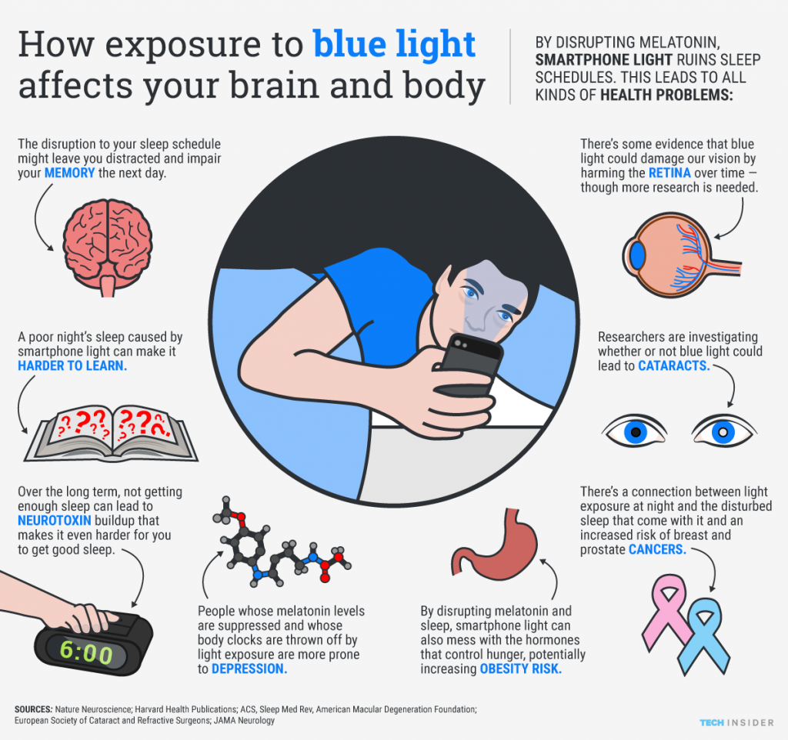

How Does Screens Affect Child Development?
Hover Over Image for Information

Language Development
sadasdafawfawefawef
Social-Emotional Development
asfasdfawfawefawfaWEFA
Role of Parents in Managing Screen Time
asfasdfawfawefawfaWEFA
Conclusion Of The Child Development With Screens
Conculsion Page